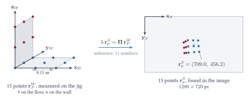

Camera calibration by the Direct Linear Transform
From the pixel positions of measured points to the eleven numbers of a camera, every step written out
1The problem
A rigid object carrying points whose positions have been measured, a calibration jig, is placed in front of a camera. Someone finds each point in the photograph and records its pixel position. From the measured positions and the pixel positions, find the camera: its focal length, principal point and pixel geometry, and where it stands relative to the jig.

Two frames are involved, with the deck's convention that a superscript names the frame a vector is expressed in:
| frame | what it is | vectors in it |
|---|---|---|
| \(W\) | the jig's own frame, the "world": origin at the inner corner, axes along the edges of the two faces. | \(\v{r}_{P}^{W}\), the points, known from measuring the jig |
| \(C\) | the camera frame: origin at the pinhole, \(z_C\) along the optical axis, out through the lens. | \(\v{r}_{P}^{C}\), unknown |
| \(S\) | the sensor frame, in pixels. | \(\v{r}_{p}^{S}\), the points found in the image, measured |
Unknowns
- \(\v{K}_f\), the intrinsic matrix: \(f_x, f_y, s, o_{xs}, o_{ys}\), 5 numbers.
- \(\R_W^C\), the orientation of the jig frame in the camera frame: 3 numbers.
- \(\v{o}_W^C\), the position of the jig's origin in the camera frame: 3 numbers.
Eleven in all: 5 intrinsic, 6 extrinsic.
Knowns
- \(\v{r}_{P,i}^{W}\), the positions of \(n\) points on the jig, from measuring it: \(3n\) numbers.
- \(\v{r}_{p,i}^{S}\), the pixel positions of the same \(n\) points, in the same order: \(2n\) numbers.
Nothing about the camera is assumed. In particular the pixels are not assumed square, nor the skew zero; the method finds out.
The correspondence, which jig point is which image point, is taken as given. On a real jig the points are numbered or coloured so that a person or a program can match them; with fewer than a dozen it is often done by hand.
2The camera model, with the scale written out
Take one point \(P\) at \(\v{r}_P^{W}\) on the jig. Its position in the camera frame is the rigid transformation
\[\v{r}_P^{C} = \R_W^C\,\v{r}_P^{W} + \v{o}_W^C, \qquad \v{r}_P^{C} = \m{x_P^C \\ y_P^C \\ z_P^C}, \tag{2.1}\]and the pinhole puts it on the sensor at
\[x_p^S = f_x\,\frac{x_P^C}{z_P^C} + s\,\frac{y_P^C}{z_P^C} + o_{xs}, \qquad y_p^S = f_y\,\frac{y_P^C}{z_P^C} + o_{ys}. \tag{2.2}\]This is the content of the pinhole slides: similar triangles give \(x^I = f\,x^C/z^C\), and the pixel conversion adds the scale factors and the offset to the principal point. Hold on to the division by \(z_P^C\). A point twice as far away lands half as far from the principal point; that division is where all the depth information lives, and it is what makes (2.2) nonlinear in the unknowns.
The slides package (2.2) by multiplying through by \(z_P^C\). Give the multiplier a name, because it is different for every point and has to be eliminated by hand:
\[\lambda\,\v{r}_p^{S} = \v{K}_f\,\v{r}_P^{C}, \qquad \lambda = z_P^C, \qquad \v{r}_p^{S} = \m{x_p^S \\ y_p^S \\ 1}, \qquad \v{K}_f = \m{f_x & s & o_{xs} \\ 0 & f_y & o_{ys} \\ 0 & 0 & 1}. \tag{2.3}\]The third row of (2.3) reads \(\lambda\cdot1 = z_P^C\), which is where \(\lambda\) gets its meaning: the last row of \(\v{K}_f\) being \((0, 0, 1)\) makes the third component of \(\v{K}_f\v{r}_P^C\) the depth. Now put (2.1) in, writing \(\v{r}_P^W\) with a fourth coordinate equal to 1 so that the shift \(\v{o}_W^C\) rides along in the matrix product:
\[\boxed{\ \lambda\,\v{r}_p^{S} = \underbrace{\v{K}_f\m{\R_W^C & \v{o}_W^C}}_{\P}\ \m{x_P^W \\ y_P^W \\ z_P^W \\ 1}\ } \tag{2.4}\]\(\P\) is \(3\times4\), twelve entries, and it is the whole camera: every unknown in the problem is inside it, and nothing else is. Writing its rows as \(\pr{1}, \pr{2}, \pr{3}\) and \(\v{X} = (x_P^W, y_P^W, z_P^W, 1)^\T\), the two pixel coordinates are ratios:
\[x_p^S = \frac{\pr{1}\v{X}}{\pr{3}\v{X}}, \qquad y_p^S = \frac{\pr{2}\v{X}}{\pr{3}\v{X}}, \qquad \lambda = \pr{3}\v{X}. \tag{2.5}\]Two things about \(\P\) are worth noticing now, because the method is built on them.
- Its scale means nothing. Multiply \(\P\) by any nonzero \(c\) and every \(\lambda\) absorbs it: the same pixels come out of (2.5). So the pixels can determine \(\P\) only up to a factor, and \(\P\) has \(12 - 1 = 11\) meaningful numbers. That is the count on the slides, met from the other side: 5 intrinsic plus 6 extrinsic equals the 11 degrees of freedom of a \(3\times4\) matrix taken up to scale. There is no slack, and that is what makes the split of §5 unique.
- Its last row is \(c\) times the third row of the rotation. Since the bottom row of \(\v{K}_f\) is \((0, 0, 1)\), the bottom row of \(\v{K}_f\R\) is the bottom row of \(\R\), a unit vector. So the length of the first three entries of \(\pr{3}\) is the unknown factor \(c\). §5 starts from this.
3What one point gives
For point \(i\), with \((x_i, y_i)\) short for its measured pixel position and \(\v{X}_i\) its known jig position with the 1 appended, (2.5) says
\[x_i\,(\pr{3}\v{X}_i) = \pr{1}\v{X}_i, \qquad y_i\,(\pr{3}\v{X}_i) = \pr{2}\v{X}_i. \tag{3.1}\]Two equations, and the depth is gone: it was \(\pr{3}\v{X}_i\), and multiplying through has put it on the left as a product of known numbers and unknown ones. Each equation is a measured pixel coordinate times a row of \(\P\) on one side and a row of \(\P\) on the other: linear in the twelve entries of \(\P\). To make that visible, stack the rows of \(\P\) into one vector of twelve unknowns,
\[\v{p} = \m{\tilde{\v{p}}_1 \\ \tilde{\v{p}}_2 \\ \tilde{\v{p}}_3} \in \mathbb{R}^{12}, \tag{3.2}\]and move everything in (3.1) to one side:
\[\m{\v{X}_i^\T & \v{0}^\T & -x_i\,\v{X}_i^\T \\ \v{0}^\T & \v{X}_i^\T & -y_i\,\v{X}_i^\T}\v{p} = \v{0}. \tag{3.3}\]This \(2\times12\) block is one point's contribution. Its entries are the point's jig coordinates and its pixel coordinates, all measured. Written out, the first row is
\[x_i^W p_{11} + y_i^W p_{12} + z_i^W p_{13} + p_{14} - x_i\,x_i^W p_{31} - x_i\,y_i^W p_{32} - x_i\,z_i^W p_{33} - x_i\,p_{34} = 0. \tag{3.4}\]"Each point gives two equations", as the slide says: one for its row in the image, one for its column.
4Many points: the system and its solution
Stack the blocks (3.3) for all \(n\) points:
\[\v{A}\,\v{p} = \v{0}, \qquad \v{A} = \m{\v{X}_1^\T & \v{0}^\T & -x_1\,\v{X}_1^\T \\ \v{0}^\T & \v{X}_1^\T & -y_1\,\v{X}_1^\T \\ & \vdots & \\ \v{X}_n^\T & \v{0}^\T & -x_n\,\v{X}_n^\T \\ \v{0}^\T & \v{X}_n^\T & -y_n\,\v{X}_n^\T} \in \mathbb{R}^{2n\times12}. \tag{4.1}\]\(2n\) equations, twelve unknowns, right-hand side zero. The scale of \(\v{p}\) is free, as it must be from §2: if \(\v{p}\) solves (4.1) so does \(c\,\v{p}\). What is being determined is a direction in \(\mathbb{R}^{12}\), which has eleven degrees of freedom, and so eleven independent equations are needed.
Six points
Six points give twelve equations, one more than needed. For points in general position \(\v{A}\) has rank 11 and its null space is one line: \(\v{p}\) is unique up to scale, and twelve equations for eleven unknowns means the null vector fits every pixel exactly, noise or no noise. The slide's "at least 6 points" is this count. Five points give ten equations and a two-dimensional null space: a whole family of cameras could have taken the picture.
More points
With \(n > 6\) and noisy pixels there is no \(\v{p}\) with \(\v{A}\v{p} = \v{0}\) exactly, and the question becomes
\[\min_{\v{p}}\ \Vert\v{A}\v{p}\Vert^2 \quad\text{subject to}\quad \Vert\v{p}\Vert = 1, \tag{4.2}\]whose answer is the right singular vector of \(\v{A}\) for its smallest singular value: with \(\v{A} = \v{U}\mathbf{\Sigma}\v{V}^\T\) and \(\v{p} = \v{V}\v{a}\), \(\Vert\v{A}\v{p}\Vert^2 = \sum_j\sigma_j^2a_j^2\), smallest when all of the unit vector \(\v{a}\) sits on the smallest \(\sigma_j\). For six exact points the smallest singular value is zero and (4.2) returns the exact null vector, so one recipe, "take the last right singular vector of \(\v{A}\)", covers every case. That is what the code in §8 does.
The jig must not be flat
Suppose every point has \(z_i^W = 0\). Then in every row of \(\v{A}\) the entries multiplying \(p_{13}\), \(p_{23}\) and \(p_{33}\) are zero: three columns of \(\v{A}\) vanish, its rank is at most 9, and its null space has dimension at least 3. In fact it is exactly 4: the three entries of \(\P\)'s third column, which the data never touch, plus the one direction that is always free. The floor-only run in §8 shows the four zero singular values. The reason is the one the fiducial notes use in the other direction: for coplanar points (2.4) collapses to \(\lambda\v{r}_p^S = \v{K}_f\m{\v{r}_1 & \v{r}_2 & \v{o}}\v{q}\), a \(3\times3\) matrix with 8 degrees of freedom, and 8 is less than 11. A flat target fixes the homography; it cannot fix the camera.
A jig that is almost flat is almost as bad. Three singular values that are small rather than zero mean three directions in \(\v{p}\) that the data barely constrain, and noise fills them. This is the first half of the slide's "non-coplanar points that fill the capture volume": the depth of the jig must be a good fraction of its distance from the camera. §6 says why, and the example measures it.
5Taking Π apart: K, R and o
We have \(\P\) up to a factor \(c\), and we know from (2.4) what it is made of:
\[\P = c\,\v{K}_f\m{\R & \v{o}} = \m{\v{M} & \v{p}_4}, \qquad \v{M} = c\,\v{K}_f\R \ \ (3\times3), \qquad \v{p}_4 = c\,\v{K}_f\v{o}. \tag{5.1}\]The task is to split \(\v{M}\) into an upper-triangular matrix and a rotation. Write \(\v{M}\) by its rows, \(\mr{1}, \mr{2}, \mr{3}\), and \(\R\) by its rows \(\v{r}_1^\T, \v{r}_2^\T, \v{r}_3^\T\), which are orthonormal. Then, row by row, \(\v{M} = c\,\v{K}_f\R\) says
\[\mr{3} = c\,\v{r}_3^\T, \qquad \mr{2} = c\,(f_y\,\v{r}_2^\T + o_{ys}\,\v{r}_3^\T), \qquad \mr{1} = c\,(f_x\,\v{r}_1^\T + s\,\v{r}_2^\T + o_{xs}\,\v{r}_3^\T). \tag{5.2}\]The bottom row involves only \(\v{r}_3\); the middle row brings in \(\v{r}_2\); the top row brings in \(\v{r}_1\). So work from the bottom up, peeling off one row of \(\R\) at a time with the orthonormality doing the work. Five steps.
- The sign. From (2.5), \(\pr{3}\v{X}_i = c\,z_i^C\): the third row of \(\P\) applied to any jig point is \(c\) times that point's depth. Every point is in front of the camera, so if \(\pr{3}\v{X}_i\) comes out negative, \(c\) is negative, and the fix is to replace \(\P\) by \(-\P\). After this \(c > 0\).
- The scale. \(\Vert\v{r}_3\Vert = 1\), so from the first of (5.2) \[c = \Vert\tilde{\v{m}}_3\Vert, \qquad \v{r}_3 = \tilde{\v{m}}_3 / c. \tag{5.3}\] Divide all of \(\P\) by \(c\). From here on \(\v{M} = \v{K}_f\R\) and \(\v{p}_4 = \v{K}_f\v{o}\) with no factor.
- The middle row. \(\tilde{\v{m}}_2 = f_y\,\v{r}_2 + o_{ys}\,\v{r}_3\), and \(\v{r}_2\perp\v{r}_3\). Dot with \(\v{r}_3\) to isolate \(o_{ys}\); what is left is \(f_y\v{r}_2\), whose length is \(f_y\) because \(\v{r}_2\) is a unit vector: \[o_{ys} = \tilde{\v{m}}_2\cdot\v{r}_3, \qquad \v{v} = \tilde{\v{m}}_2 - o_{ys}\,\v{r}_3, \qquad f_y = \Vert\v{v}\Vert, \qquad \v{r}_2 = \v{v}/f_y. \tag{5.4}\]
- The top row. \(\tilde{\v{m}}_1 = f_x\,\v{r}_1 + s\,\v{r}_2 + o_{xs}\,\v{r}_3\), with \(\v{r}_1\) perpendicular to both of the rows already found. Dot with \(\v{r}_3\) and with \(\v{r}_2\), then take the length of what remains: \[o_{xs} = \tilde{\v{m}}_1\cdot\v{r}_3, \qquad s = \tilde{\v{m}}_1\cdot\v{r}_2, \qquad \v{u} = \tilde{\v{m}}_1 - o_{xs}\,\v{r}_3 - s\,\v{r}_2, \qquad f_x = \Vert\v{u}\Vert, \qquad \v{r}_1 = \v{u}/f_x. \tag{5.5}\]
- The position. With \(\v{K}_f\) assembled from (5.4) and (5.5), the last column gives \[\v{o}_W^C = \v{K}_f^{-1}\,\v{p}_4, \tag{5.6}\] a triangular solve.
This is Gram–Schmidt orthogonalisation run on the rows of \(\v{M}\) from the bottom up, and the coefficients it discards along the way are exactly the entries of \(\v{K}_f\). Counting what came out: \(c\) (1), \(f_x, f_y, s, o_{xs}, o_{ys}\) (5), the rotation (3), the position (3), twelve numbers from the twelve entries of \(\P\), with the one that means nothing, \(c\), set aside. Nothing was left over and nothing was short. That is the 5 + 6 = 11 of the slides doing its work.
Two conventions were made along the way: \(f_x\) and \(f_y\) were taken positive, as the lengths in (5.4) and (5.5), and the rows of \(\R\) came out orthonormal by construction. For a real camera and a right-handed jig frame this gives \(\det\R = +1\). If it came out \(-1\) the picture would be a mirror image of what the model can produce, which means the pixel axes or the jig axes were labelled with the wrong handedness. Appendix A shows that with these conventions the split is the only one possible: an upper-triangular matrix with positive diagonal times a rotation can be written that way in just one way.
6What noise does
Pixel positions are found to a fraction of a pixel at best, and the jig itself was measured with a tape or a machine of finite accuracy. Both enter \(\v{A}\), and through (4.2) they move \(\v{p}\). What does a moved \(\v{p}\) look like after §5?
All eleven numbers move, and the rotation hides it
The split of §5 is exact for any \(\v{M}\), so it never complains. \(\R\) comes out a perfect rotation whether or not it is the right one; its error is invisible from the inside, and in practice it shows up only as a mismatch when the camera is later used. \(\v{K}_f\) is where the symptoms appear, because \(\v{K}_f\) has structure we know about and \(\R\) does not: on a modern sensor the skew is zero and the pixels are square, so a skew of a few pixels or an \(f_x\) that differs from \(f_y\) is a direct reading of how much noise went into the fit. The noisy run in §8 gets \(s = 2.7\) px and \(f_x - f_y = 0.2\) px from half a pixel of noise; both should be zero. They are the visible part of an error that is also in the principal point, the focal length, the rotation and the position, where there is no "should be" to compare against.
Errors come in pairs
The eleven numbers are not disturbed independently. Some pairs change the picture in nearly the same way, so the data cannot tell them apart, and noise moves them together. Two pairs matter most, and both can be read off (2.2).
- Focal length and distance. For a point at depth \(z\), \(x_p^S - o_{xs} = f_x\,x^C/z\). Increase \(f_x\) by a factor \((1+\epsilon)\) and push the jig back so that every depth grows by the same factor: the ratio is unchanged and so is every pixel. The only thing that breaks the tie is that the jig's points are not all at the same depth, so pushing it back scales the near and far depths by different amounts relative to their spread. A jig whose depth range is a small fraction of its distance leaves this pair almost free, and the pixel noise then drives \(f_x\) and \(o_z\) together: in the 500 repeats of §8 the correlation of their errors is \(+1.00\), the focal length is off by \(18\) px, about \(2.2\%\), and the jig's recovered distance is off by the same \(2.2\%\) of 1.5 m, \(33\) mm. Making the jig three times larger, so that its depth spans 1.4 to 2.3 m, cuts the focal-length error to \(2.4\) px, more than the factor of three that the larger image alone would give. This is the second half of the slide's "fill the capture volume": the jig must have depth, and its depth is what fixes \(f\).
- Principal point and rotation. Turn the camera by a small angle \(\alpha\) about its \(y_C\) axis and every image point moves sideways by about \(f\alpha\) pixels, the same for all points near the optical axis. Shift the principal point by \(f\alpha\) and the same thing happens. The two differ only in the second order, by the perspective terms that grow with the field of view, so for a jig that covers a small part of the image the data cannot separate them; in the example the correlation between the error in \(o_{xs}\) and the rotation error about \(y_C\) is \(-0.98\). A principal point that is "off by 13 px" is, as far as the fit is concerned, a camera that is turned by \(13/800\) rad, about a degree, and the two cancel when the camera is used on the same jig. They do not cancel on another object.
Both pairs have the same remedy, and it is the slide's: the jig must be large in the image and deep along the optical axis. A small jig in the middle of the frame constrains the ratios that matter, and the pairs above are left to the noise.
Algebraic error is not pixel error
What (4.2) minimises is not the quantity one cares about. Each row of \(\v{A}\v{p}\) is a pixel equation (3.1) multiplied through by the depth \(\pr{3}\v{X}_i\), so a point twice as far away counts twice as much in \(\Vert\v{A}\v{p}\Vert\), and points near the camera are under-weighted. The quantity one cares about is the distance in pixels between where a point was seen and where the fitted camera puts it, the reprojection error, and (4.2) looks at it only through this depth-dependent weighting. For a jig whose depths differ by twenty per cent, as in the example, the two are nearly proportional and the distinction is academic. For a scene with points from half a metre to five metres it is not, and §7 is the remedy.
7Refining the fit
Write the error that matters and minimise it directly, starting from the answer of §5:
\[E(\v{K}_f, \R, \v{o}) = \sum_{i=1}^{n}\left\Vert\mathbf{\pi}\!\left(\v{K}_f,\ \R\,\v{r}_i^{W} + \v{o}\right) - \m{x_i \\ y_i}\right\Vert^2, \tag{7.1}\]where \(\mathbf{\pi}\) is the pinhole map (2.2), depth division included. Gauss–Newton does it: linearise the \(2n\) residuals in the parameters, solve the small least-squares problem for a step, apply it, repeat. The rotation is handled as a small rotation vector applied on the left of the current estimate, so it stays a rotation without any snapping. The example takes the Jacobian by finite differences, one parameter at a time, so that the code shows nothing but "nudge a parameter, see how the pixels move".
Two versions are run. One keeps all eleven parameters. The other imposes what we know about the sensor, square pixels and zero skew, leaving nine: \(f\), the principal point, and the pose. The example's result is sobering: neither version changes the answer by much. The reprojection error is already at the noise level after §5, the eleven-parameter refinement leaves the numbers essentially where they were, and imposing the structure moves \(f\) from \(18.0\) to \(18.4\) px of error, which is no improvement at all.
Both results follow from §6. The closed form threw nothing away, so there is little for a reprojection fit to recover, unlike the tag problem where the snap to a rotation discarded the fit and refinement won a factor of five. And the error in \(f\) is not in the spare degrees of freedom \(s\) and \(f_x - f_y\), which are small; it is in the focal-length-against-depth pair, which square pixels say nothing about. The slide's third "issue", that the free parameters absorb noise, is true of the symptoms and not of the disease. What the refinement framework does buy is the ability to add to (7.1) what the linear method cannot hold: the distortion terms of the lens, which the slides list as the method's second issue, and the data of many photographs at once. That is the shape of every calibration tool in use, and the method of these notes is how it finds its starting point.
8The worked example
A camera with focal length 800 px, square pixels, no skew and principal point \((640, 360)\): the camera of the fiducial notes. The jig of §1, 0.3 m across, placed 1.5 m in front of the camera and turned 30° so that both faces are seen. The script projects the fifteen points with (2.1) and (2.2), forgets the camera and recovers it by §4 and §5, refines by §7, then repeats everything with half a pixel of noise on every pixel coordinate, tries the nine floor points alone, and runs the noisy calibration 500 times for two sizes of jig.
import numpy as np
np.set_printoptions(precision=4, suppress=True)
# ---- 1. the set-up -----------------------------------------------------------
K_true = np.array([[800.0, 0.0, 640.0], # f_x, skew, principal point (pixels)
[ 0.0, 800.0, 360.0], # f_y
[ 0.0, 0.0, 1.0]])
def rotation(axis, deg):
"""Rotation matrix for an angle about a unit axis (Rodrigues' formula)."""
k = np.asarray(axis, float); k /= np.linalg.norm(k)
a = np.radians(deg)
Kx = np.array([[0, -k[2], k[1]], [k[2], 0, -k[0]], [-k[1], k[0], 0]])
return np.eye(3) + np.sin(a) * Kx + (1 - np.cos(a)) * Kx @ Kx
R_true = rotation([0.3, 1.0, 0.1], -30.0) # the jig seen from 30 degrees to one side
o_true = np.array([-0.15, -0.10, 1.50]) # its origin 1.5 m in front of the camera
# the jig: an L of two perpendicular faces, points every 0.15 m -- 9 on the floor
# (z_W = 0) and 6 on the wall (x_W = 0). Not all in one plane; that matters (step 6).
def jig(spacing):
g = spacing * np.arange(3)
floor = np.array([[x, y, 0.0] for x in g for y in g])
wall = np.array([[0.0, y, z] for y in g for z in g[1:]])
return floor, np.vstack([floor, wall]) # 15 points, one per row
floor, X_W = jig(0.15)
def project(K, R, o, X_W):
"""Pixel coordinates of world points X_W (rows), with the depth division done explicitly."""
X_C = X_W @ R.T + o # r^C = R r^W + o, one row per point
uvw = X_C @ K.T # K r^C: (f_x X + s Y + o_xs Z, f_y Y + o_ys Z, Z)
lam = uvw[:, 2] # the third row is Z, the depth -- that is lambda
return uvw[:, :2] / lam[:, None], lam
pix, lam = project(K_true, R_true, o_true, X_W)def build_A(X_W, pix):
"""Two rows per point: [X^T 0^T -x X^T ; 0^T X^T -y X^T] p = 0, X = (x_W, y_W, z_W, 1)."""
rows = []
for (xw, yw, zw), (x, y) in zip(X_W, pix):
X = np.array([xw, yw, zw, 1.0])
rows.append(np.concatenate([X, np.zeros(4), -x * X]))
rows.append(np.concatenate([np.zeros(4), X, -y * X]))
return np.array(rows)
# ---- 3. solve for Pi up to scale --------------------------------------------
def solve_P(A):
"""The p that makes A p as small as possible with |p| = 1: the last right singular vector."""
_, S, Vt = np.linalg.svd(A)
return Vt[-1].reshape(3, 4), Sdef decompose(P, X_W):
"""Pi = c K [R | o], with K upper triangular (positive diagonal), R a rotation."""
X_h = np.hstack([X_W, np.ones((len(X_W), 1))])
if np.mean(X_h @ P[2]) < 0: # third row of Pi X is c times the depth:
P = -P # the points are in front, so make it positive
M, p4 = P[:, :3], P[:, 3]
c = np.linalg.norm(M[2]) # bottom row of M is c r3^T, and |r3| = 1
M, p4 = M / c, p4 / c # now M = K R exactly (if the data were exact)
r3 = M[2] # bottom row of K is (0, 0, 1): M's bottom row is r3
o_ys = M[1] @ r3 # middle row: f_y r2 + o_ys r3, and r2 is perpendicular to r3
v = M[1] - o_ys * r3
f_y = np.linalg.norm(v); r2 = v / f_y
o_xs = M[0] @ r3 # top row: f_x r1 + s r2 + o_xs r3
s = M[0] @ r2
u = M[0] - o_xs * r3 - s * r2
f_x = np.linalg.norm(u); r1 = u / f_x
R = np.vstack([r1, r2, r3]) # orthonormal rows by construction
K = np.array([[f_x, s, o_xs], [0.0, f_y, o_ys], [0.0, 0.0, 1.0]])
o = np.linalg.solve(K, p4) # last column is K o
return K, R, odef refine(K, R, o, X_W, pix, iters=10, square=False):
"""Gauss-Newton on the reprojection error, starting from the closed form.
The intrinsics are the five entries of K as they stand or, with square=True,
only three (f, o_xs, o_ys): square pixels and no skew, as every modern sensor
has. The pose is a small rotation vector w applied as R <- R(w) R and a shift
of o. The Jacobian is by finite differences: each column is 'how far do the
2n pixel coordinates move when this parameter moves a little'."""
if square:
k = np.array([(K[0, 0] + K[1, 1]) / 2, K[0, 2], K[1, 2]])
unpack = lambda k: np.array([[k[0], 0, k[1]], [0, k[0], k[2]], [0, 0, 1.0]])
else:
k = np.array([K[0, 0], K[0, 1], K[0, 2], K[1, 1], K[1, 2]])
unpack = lambda k: np.array([[k[0], k[1], k[2]], [0, k[3], k[4]], [0, 0, 1.0]])
nk = len(k)
for _ in range(iters):
res = (project(unpack(k), R, o, X_W)[0] - pix).ravel()
J = np.zeros((res.size, nk + 6))
for j in range(nk + 6):
dk, w, do = np.zeros(nk), np.zeros(3), np.zeros(3)
eps = 1e-4 if j < nk else 1e-6
if j < nk: dk[j] = eps
elif j < nk + 3: w[j - nk] = eps
else: do[j - nk - 3] = eps
Rj = rotation(w, np.degrees(eps)) @ R if nk <= j < nk + 3 else R
res_j = (project(unpack(k + dk), Rj, o + do, X_W)[0] - pix).ravel()
J[:, j] = (res_j - res) / eps
step = np.linalg.lstsq(J, -res, rcond=None)[0]
k = k + step[:nk]
if np.linalg.norm(step[nk:nk + 3]) > 0:
R = rotation(step[nk:nk + 3], np.degrees(np.linalg.norm(step[nk:nk + 3]))) @ R
o = o + step[nk + 3:]
return unpack(k), R, odef run(pix, label):
print("==== %s ====" % label)
A = build_A(X_W, pix)
P, S = solve_P(A)
print("singular values of A:", S)
K, R, o = decompose(P, X_W)
print("recovered K:\n", K)
print("recovered o^C_W :", o, " true:", o_true)
print("R^T R - I, largest entry: %.1e det R = %.4f" % (np.abs(R.T @ R - np.eye(3)).max(), np.linalg.det(R)))
print("rotation error : %.4f deg" % angle_between(R_true, R))
print("position error : %.2f mm" % (1000 * np.linalg.norm(o - o_true)))
print("reprojection error: %.3f px (RMS)" % reproj(K, R, o, X_W, pix))
for square in (False, True):
K2, R2, o2 = refine(K, R, o, X_W, pix, square=square)
print("refined, %s: f_x %.1f f_y %.1f s %.2f pp (%.1f, %.1f)"
% ("all 11 parameters " if not square else "square pixels, 9 par", K2[0, 0], K2[1, 1], K2[0, 1], K2[0, 2], K2[1, 2]))
print(" rotation error %.4f deg, position error %.2f mm, reprojection %.3f px"
% (angle_between(R_true, R2), 1000 * np.linalg.norm(o2 - o_true), reproj(K2, R2, o2, X_W, pix)))
print()
def repeats(X_W, pix, rng, n=500):
"""The noisy calibration n times over, to see what is typical and which errors travel together."""
e = {k: [] for k in ("f_x", "f_y", "s", "o_xs", "z", "theta_y", "rot", "pos", "f_11", "f_9", "rot_9", "pos_9")}
for _ in range(n):
pn = pix + rng.normal(0, 0.5, pix.shape)
K, R, o = decompose(solve_P(build_A(X_W, pn))[0], X_W)
dR = R @ R_true.T # the small rotation left over, as a vector
w = np.degrees(np.array([dR[2, 1] - dR[1, 2], dR[0, 2] - dR[2, 0], dR[1, 0] - dR[0, 1]]) / 2)
e["f_x"].append(K[0, 0] - 800); e["f_y"].append(K[1, 1] - 800); e["s"].append(K[0, 1])
e["o_xs"].append(K[0, 2] - 640); e["z"].append(1000 * (o[2] - o_true[2])); e["theta_y"].append(w[1])
e["rot"].append(angle_between(R_true, R)); e["pos"].append(1000 * np.linalg.norm(o - o_true))
e["f_11"].append(refine(K, R, o, X_W, pn)[0][0, 0] - 800)
K9, R9, o9 = refine(K, R, o, X_W, pn, square=True)
e["f_9"].append(K9[0, 0] - 800); e["rot_9"].append(angle_between(R_true, R9)); e["pos_9"].append(1000 * np.linalg.norm(o9 - o_true))
return {k: np.array(v) for k, v in e.items()}
if __name__ == "__main__":
print("%d jig points; depths lambda from %.3f to %.3f m; image spans x %.0f..%.0f, y %.0f..%.0f px\n"
% (len(X_W), lam.min(), lam.max(), pix[:, 0].min(), pix[:, 0].max(), pix[:, 1].min(), pix[:, 1].max()))
run(pix, "exact pixels")
rng = np.random.default_rng(1)
run(pix + rng.normal(0, 0.5, pix.shape), "pixels with 0.5 px noise")
# ---- a flat jig: the floor points only ----
print("==== the 9 floor points alone (all in the plane z_W = 0), exact pixels ====")
_, S = solve_P(build_A(floor, pix[:9]))
print("singular values of A:", S)
print("four are zero, not one: z_W = 0 wipes out three columns of A, so Pi is not determined\n")
# ---- 500 repeats ----
e = repeats(X_W, pix, rng)
print("==== 500 repeats at 0.5 px noise, jig 0.3 m across ====")
print("closed form : f_x off by %.1f px (median |error|), f_y by %.1f, skew %.1f, principal point x %.1f px"
% tuple(np.median(np.abs(e[k])) for k in ("f_x", "f_y", "s", "o_xs")))
print(" rotation error median %.2f deg, position error median %.0f mm" % (np.median(e["rot"]), np.median(e["pos"])))
print("refined, 11 : f_x off by %.1f px" % np.median(np.abs(e["f_11"])))
print("refined, 9 : f off by %.1f px; rotation error median %.2f deg, position error median %.0f mm"
% (np.median(np.abs(e["f_9"])), np.median(e["rot_9"]), np.median(e["pos_9"])))
print("errors that travel together (correlation over the 500 runs, closed form):")
print(" focal length f_x and depth of the jig o_z : %+.2f" % np.corrcoef(e["f_x"], e["z"])[0, 1])
print(" principal point o_xs and rotation about y_C : %+.2f" % np.corrcoef(e["o_xs"], e["theta_y"])[0, 1])
print(" f_x and f_y : %+.2f" % np.corrcoef(e["f_x"], e["f_y"])[0, 1])
print()
# ---- the same jig three times larger, filling the frame ----
_, X_big = jig(0.45)
pix_big, lam_big = project(K_true, R_true, o_true, X_big)
e = repeats(X_big, pix_big, rng)
print("==== 500 repeats at 0.5 px noise, jig 0.9 m across (depths %.2f to %.2f m, image spans %.0f px) ===="
% (lam_big.min(), lam_big.max(), np.ptp(pix_big[:, 0])))
print("closed form : f_x off by %.1f px, principal point x %.1f px; rotation error median %.2f deg, position error median %.0f mm"
% (np.median(np.abs(e["f_x"])), np.median(np.abs(e["o_xs"])), np.median(e["rot"]), np.median(e["pos"])))
print("refined, 9 : f off by %.1f px; rotation error median %.2f deg, position error median %.0f mm"
% (np.median(np.abs(e["f_9"])), np.median(e["rot_9"]), np.median(e["pos_9"])))
print(" focal length f_x and depth of the jig o_z, closed form: %+.2f" % np.corrcoef(e["f_x"], e["z"])[0, 1])python3 dlt_calibration.py, as produced when this page was built15 jig points; depths lambda from 1.461 to 1.760 m; image spans x 507..709, y 307..473 px
==== exact pixels ====
singular values of A: [2827.5996 418.867 333.2975 214.0555 3.932 0.6524 0.5108
0.306 0.0558 0.0515 0.0356 0. ]
recovered K:
[[800. 0. 640.]
[ 0. 800. 360.]
[ 0. 0. 1.]]
recovered o^C_W : [-0.15 -0.1 1.5 ] true: [-0.15 -0.1 1.5 ]
R^T R - I, largest entry: 3.3e-16 det R = 1.0000
rotation error : 0.0000 deg
position error : 0.00 mm
reprojection error: 0.000 px (RMS)
refined, all 11 parameters : f_x 800.0 f_y 800.0 s 0.00 pp (640.0, 360.0)
rotation error 0.0000 deg, position error 0.00 mm, reprojection 0.000 px
refined, square pixels, 9 par: f_x 800.0 f_y 800.0 s 0.00 pp (640.0, 360.0)
rotation error 0.0000 deg, position error 0.00 mm, reprojection 0.000 px
==== pixels with 0.5 px noise ====
singular values of A: [2827.3824 418.7172 333.2829 214.0376 3.932 0.6522 0.5108
0.306 0.0556 0.0516 0.0355 0.0019]
recovered K:
[[809.0985 2.6566 638.7652]
[ 0. 808.8609 346.6953]
[ 0. 0. 1. ]]
recovered o^C_W : [-0.1475 -0.0748 1.5216] true: [-0.15 -0.1 1.5 ]
R^T R - I, largest entry: 1.1e-16 det R = 1.0000
rotation error : 0.7868 deg
position error : 33.28 mm
reprojection error: 0.353 px (RMS)
refined, all 11 parameters : f_x 811.0 f_y 810.9 s 2.66 pp (637.1, 346.3)
rotation error 0.8101 deg, position error 37.06 mm, reprojection 0.353 px
refined, square pixels, 9 par: f_x 807.3 f_y 807.3 s 0.00 pp (628.7, 351.3)
rotation error 0.6619 deg, position error 32.57 mm, reprojection 0.364 px
==== the 9 floor points alone (all in the plane z_W = 0), exact pixels ====
singular values of A: [2301.3994 275.0636 264.0562 3.0583 0.4405 0.3598 0.0426
0.0347 0. 0. 0. 0. ]
four are zero, not one: z_W = 0 wipes out three columns of A, so Pi is not determined
==== 500 repeats at 0.5 px noise, jig 0.3 m across ====
closed form : f_x off by 18.0 px (median |error|), f_y by 18.5, skew 1.7, principal point x 13.0 px
rotation error median 1.52 deg, position error median 63 mm
refined, 11 : f_x off by 19.1 px
refined, 9 : f off by 18.4 px; rotation error median 1.41 deg, position error median 60 mm
errors that travel together (correlation over the 500 runs, closed form):
focal length f_x and depth of the jig o_z : +1.00
principal point o_xs and rotation about y_C : -0.98
f_x and f_y : +1.00
==== 500 repeats at 0.5 px noise, jig 0.9 m across (depths 1.38 to 2.28 m, image spans 517 px) ====
closed form : f_x off by 2.4 px, principal point x 2.4 px; rotation error median 0.22 deg, position error median 10 mm
refined, 9 : f off by 2.3 px; rotation error median 0.17 deg, position error median 9 mm
focal length f_x and depth of the jig o_z, closed form: +0.96
Reading the output against the derivation, with the labels used above:
- The set-up. Fifteen points, depths from 1.46 to 1.76 m, filling about 200 by 170 px of a 1280 by 720 image: a small jig in the middle of the frame, which is how calibration jigs are usually photographed and, §6 says, why they should not be.
- Exact pixels. \(\v{A}\) has eleven nonzero singular values and a twelfth that is zero: the null vector of §4 exists and is unique. §5 returns the camera to machine precision, \(\R^\T\R - \v{I}\) is at \(10^{-16}\), and the refinement has nothing to do.
- Half a pixel of noise. The smallest singular value is now \(0.002\), not zero: fifteen points over-determine \(\v{p}\) and the fit is a compromise, with a reprojection error of \(0.35\) px, below the \(0.5\) px of the noise as a least-squares fit must be. The recovered \(\v{K}_f\) has a skew of \(2.7\) px and \(f_x \ne f_y\), the symptoms of §6; \(\R\) is still a rotation to \(10^{-16}\), the hidden error. The focal length is \(9\) px high and the jig has moved \(22\) mm back: the pair of §6, in one draw. Refinement changes almost nothing; square pixels change almost nothing.
- The floor alone. Four zero singular values, as §4 predicted: three for the columns of \(\v{A}\) that \(z^W = 0\) wiped out and one that is always there. The script does not try to decompose this \(\P\), because there is no single \(\P\) to decompose.
- Five hundred repeats. A typical draw has \(f\) off by \(18\) px, the principal point by \(13\) px, the orientation by \(1.5^\circ\) and the position by \(6\) cm. Their errors move in lockstep, \(f\) with depth at \(+1.00\) and principal point with rotation at \(-0.98\). The same jig three times larger, 0.9 m across and reaching from 1.4 to 2.3 m, brings \(f\) to within \(2.4\) px and the orientation to \(0.2^\circ\), and loosens the \(f\)–depth tie to \(+0.96\). Half a pixel of noise did not change; the jig did.
9What this says about calibrating a camera
The slide lists three issues with the method and a later slide lists five things to check. Both lists are in the algebra above.
- Fill the volume. §6 and the 500 repeats of §8. The focal length is fixed by how differently near and far points are scaled, and the principal point by how differently points on either side of the axis move under rotation. A jig that is small in the image or shallow in depth gives the fit almost nothing to hold these with, and half a pixel of noise becomes a two per cent error in \(f\). The remedy is not a better solver; it is a bigger, deeper jig, or many photographs of a smaller one at different places and depths.
- Not flat. §4. A planar jig leaves three directions in \(\v{p}\) unconstrained. A nearly planar one leaves them nearly so, and the near-zero singular values are a diagnostic worth printing.
- Distortion is not in the model. Nothing in (2.2) bends a straight line, so a lens that does will bias every one of the eleven numbers, most of all when the jig reaches the edges of the frame where distortion is largest. This is the slide's second issue, and it is why the linear method is a starting point for a refinement that includes distortion rather than an end in itself.
- The symptoms and the disease. §6 and §7. Non-zero skew and unequal focal lengths are how noise announces itself, and it is reasonable to check them. Forcing them to their known values does not remove the error that produced them, which lives in the pairs of §6.
- A small residual is necessary, not sufficient. In the noisy run of §8 the fit reproduces the noisy pixels to \(0.35\) px while the focal length is \(9\) px wrong and the jig \(22\) mm out of place. The reprojection error measures the fit to these points; it does not measure the camera. The slide's lesson from Module 1 is this example in one line.
A count that follows from §4 points at how the slides' other method gets by without a jig. One photograph of a flat target fixes a homography, 8 numbers, of which 6 are the target's pose; the other 2 say something about \(\v{K}_f\). Three photographs at different tilts give 6 such numbers for 5 unknowns, and a flat target has done what the jig does, provided the photographs are tilted differently, which is the first thing on the "what to check" slide. The method built on this count is the one the slides name after Zhang; it is in the further reading, not derived here.
10Sources and further reading
Nothing in these notes is taken from a source: every claim rests on the derivations and the worked example above. The list below is further reading, pointers to where the topic is treated in depth, offered without any claim about what they conclude.
Further reading
- Abdel-Aziz, Y. I. & Karara, H. M. (1971). Direct linear transformation from comparator coordinates into object space coordinates in close-range photogrammetry. Proc. Symposium on Close-Range Photogrammetry, 1–18. — the paper the method is named after.
- Hartley, R. & Zisserman, A. (2004). Multiple View Geometry in Computer Vision, 2nd ed. Cambridge University Press. — on estimating \(\P\) from point correspondences, the normalisation of §4, the decomposition of §5, and algebraic versus reprojection error (§6, §7).
- Zhang, Z. (2000). A flexible new technique for camera calibration. IEEE Transactions on Pattern Analysis and Machine Intelligence, 22, 1330–1334. — calibration from several photographs of a flat target (§9).
AAppendix A: why the split is unique
§5 writes \(\v{M} = \v{K}\R\) with \(\v{K}\) upper triangular with positive diagonal and \(\R\) a rotation, and reads the eleven numbers off the factors. If there were two such splits the numbers would be ambiguous. There are not.
Suppose \(\v{M} = \v{K}\R = \v{K}'\R'\), both of the stated form. Then
\[\v{K}'^{-1}\v{K} = \R'\R^\T. \tag{A.1}\]The left side is a product of upper-triangular matrices, hence upper triangular, with positive diagonal. The right side is a product of rotations, hence orthogonal. An orthogonal upper-triangular matrix is diagonal: its first column is a unit vector with only a first entry, so that entry is \(\pm1\) and the rest of the first row must vanish for the columns to be orthogonal to it; repeat down the diagonal. With positive diagonal the only possibility is the identity. So \(\v{K}' = \v{K}\) and \(\R' = \R\).
This is the uniqueness of the QR factorisation, with the factors in the other order. It is also why §5 must work from the bottom row up: the bottom row of \(\v{K}\) has one nonzero entry, so it ties \(\mr{3}\) to a single row of \(\R\), and each row above adds one more unknown row of \(\R\) and one more set of coefficients of \(\v{K}\). Gram–Schmidt in that order is the RQ factorisation, computed by hand.
The conventions matter. Allow negative diagonal entries and (A.1) admits diagonal matrices of \(\pm1\): each sign flip on \(f_x\) or \(f_y\) is paid for by negating a row of \(\R\), and the split is unique only up to those. §5 fixes them by taking \(f_x, f_y > 0\) and the depths positive; a decomposition that respects a different pixel-axis convention, such as the image \(y\) axis pointing up, would fix them differently and get a negative \(f_y\).